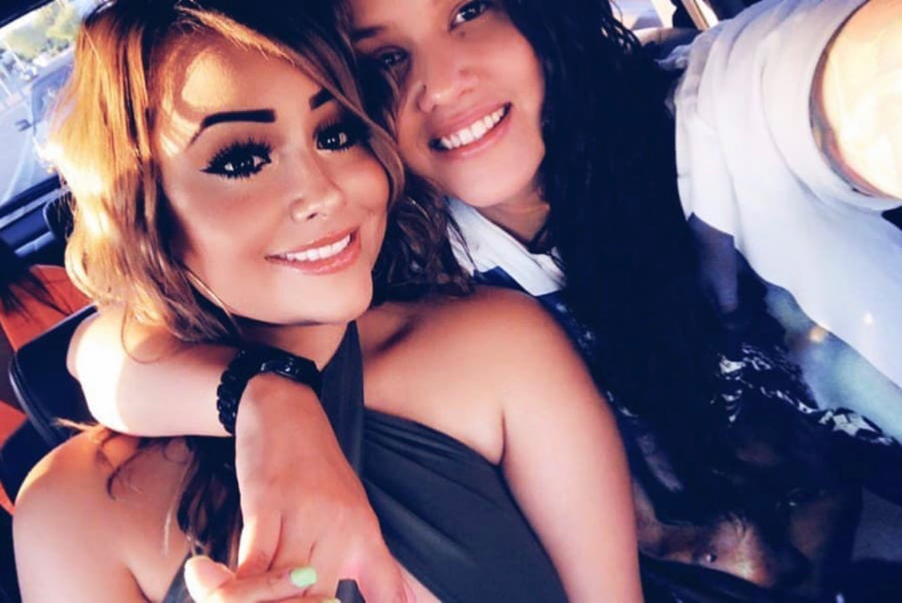
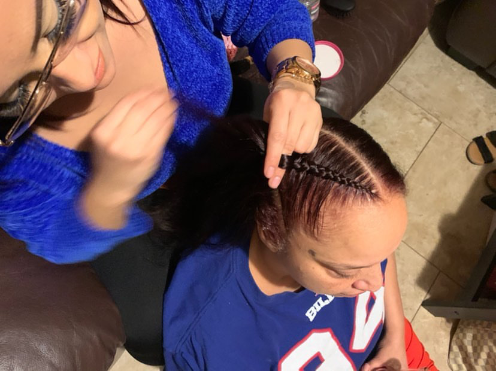

Hazzel Munoz
Hazzel Munoz has a large heart with a big attitude. As a Gemini, she embodies the role of 'work hard, play hard'. She graduated from NAU with a Bachelor’s in Special Education. Monday through Friday you will catch her at her job in finances for nine to ten hours a day, doing the job she has loved for eight years. On weekends however, a whole new animal comes out. She goes out and loves to have fun, and as her friends claim, poison them. In fact, a new term has become a popular sensation amongst her friends called, ‘getting Hazzeled’, which just means she could hold her liquor better than they could. Despite spending time with her loving girlfriend Juma and her kids, she still has a passion to braid hair and do make up. Though she is self-taught she has incredible style and is always pushing boundaries on different looks and styles. She hopes to follow this passion in conjunction with her job, and is always looking for new models.
Hazzel had a huge falling out with her family in 2014 when she came out to them as being a lesbian. Her family was torn, and her parents threatened to not let her around her brothers anymore. Hazzel is extremely family oriented, so she suppressed her feelings and preferences to ensure she could keep her family together. In 2019, Hazzel began talking to Juma, who was a DJ at the clubs she liked to visit. They kept their relationship a secret for 7 months, which was difficult on her because she always felt like she was lying to her parents. It had gotten to the point that Hazzel moved out of her childhood home to avoid confrontation with her parents. In February 2020, Hazzel asked her parents out to lunch, where she finally admitted she couldn't change who she was, no matter how hard she had tried for them. They accepted her openly in 2020 and Hazzel has never been more relieved in her enitre life. She now has a caring girlfriend, a supportive family, and is practically a step mother to two great kids. It's her biggest accomplishment.


Hazzel creates fresh new looks while at Coachella for her friends. Her passion is experimenting with bright colors, face jewels and dramatic vibes. However she has been known to do natural make up in the past as well. Hazzel knows up to 8 different types of braids. She initially started braiding her brother's hair when it was long, but slowly started to self teach herself. With a push from her girlfriend Juma, Hazzel has made an instagram to show off her work. You can look at Hazzel's work on Instagram by searching Hazzelbbybrdz
